Graphic Design
- I Beta Eta tee
- II The New Yorker
- III Summit Your Potential
- IV After Hours
- V Own the Cover
- VI Styling Speaker Panel
I
Beta Eta teeSpring 2025
Class shirt for Delta Sigma Pi’s Beta Eta pledge class. The class number runs across the front in script; the back lists every member’s nickname.
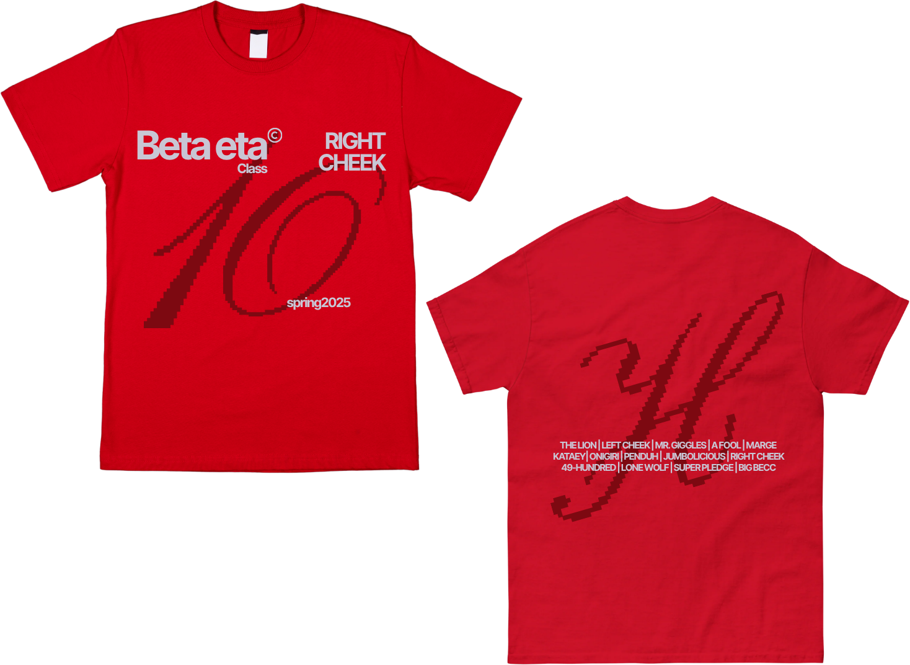
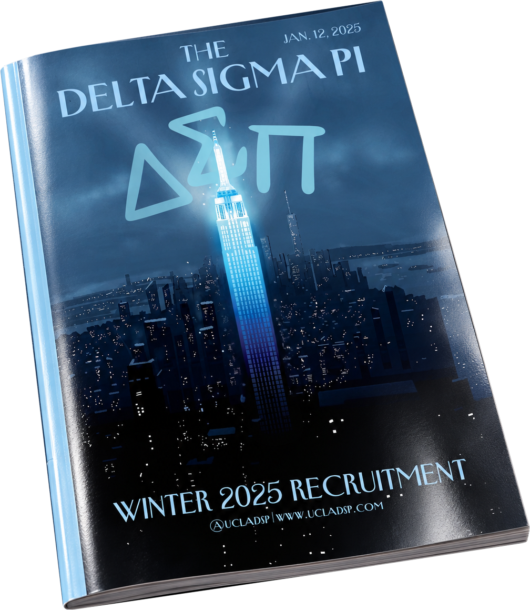
II
The New YorkerWinter 2025 rush
Delta Sigma Pi’s winter 2025 recruitment, styled as a New Yorker cover, in two versions.
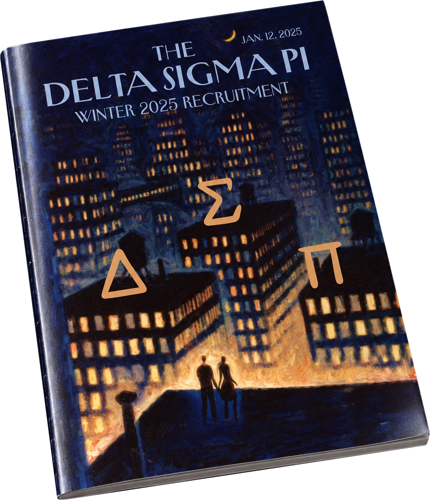
III
Summit Your PotentialFall 2025 rush
Fall 2025 recruitment flyer for Delta Sigma Pi, built from torn paper and a snowy climb.
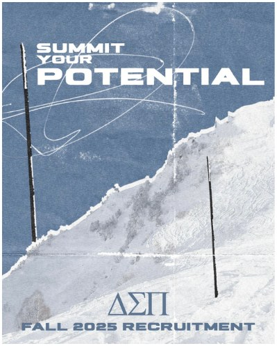
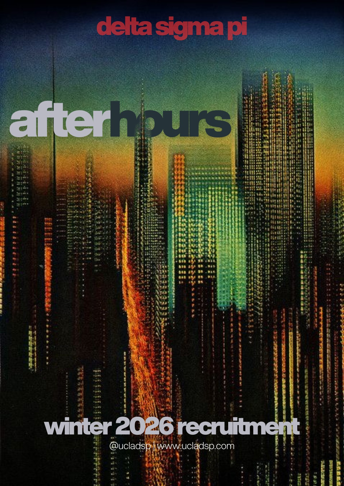
IV
After HoursWinter 2026 rush
Winter 2026 recruitment campaign: the main flyer, a week-of-events post, and how the set looks on the chapter’s Instagram.
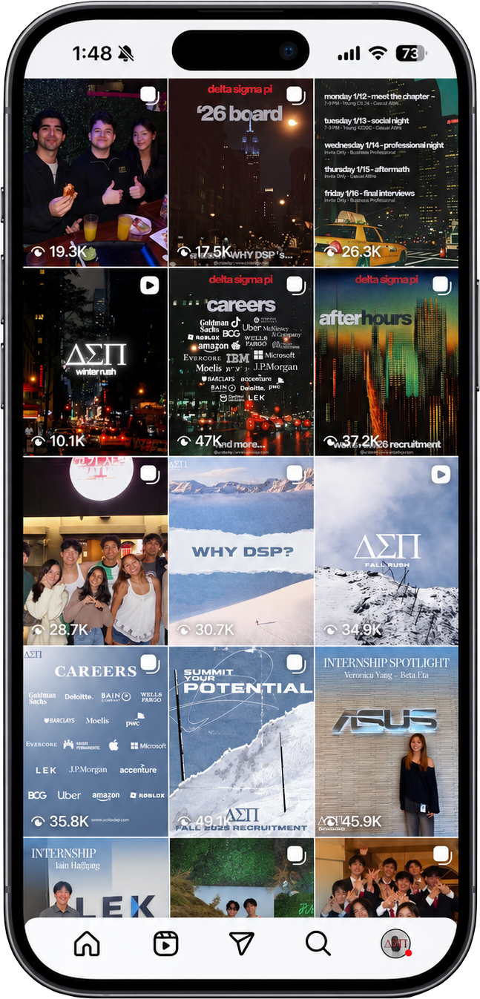
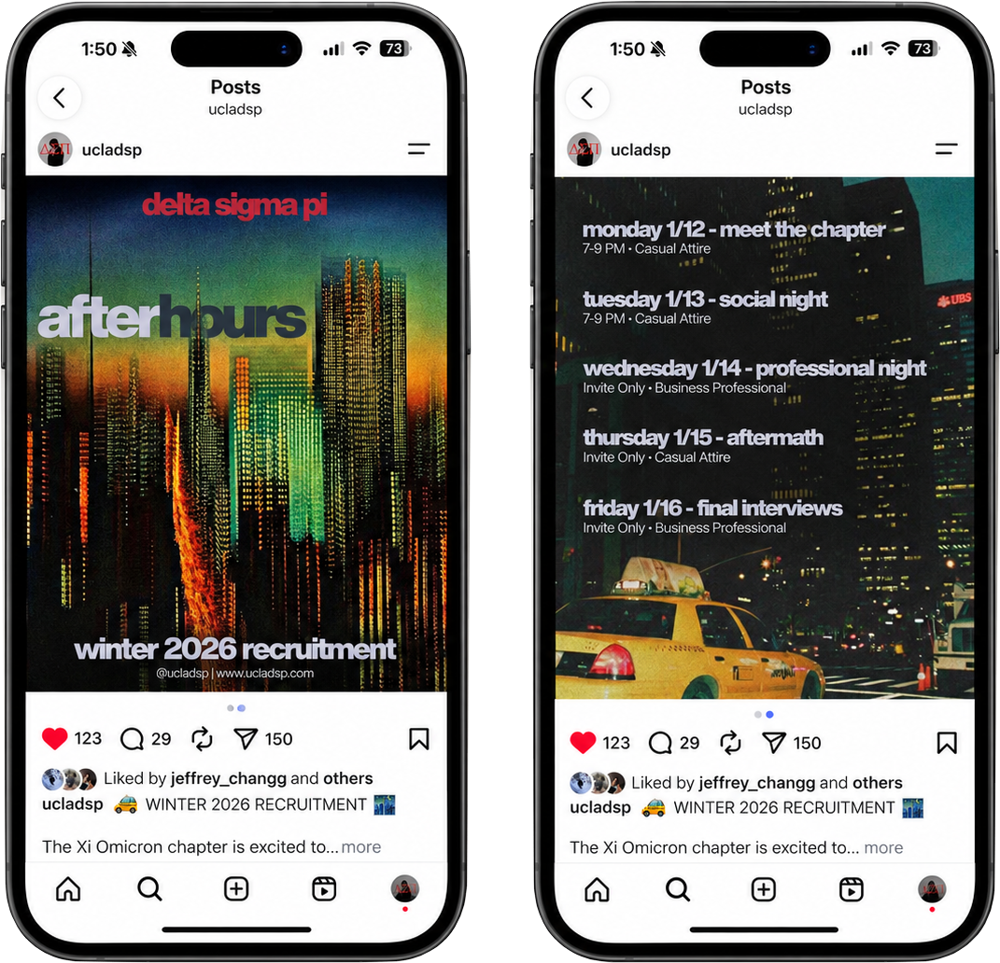
V
Own the CoverFall 2026 rush
Fall 2026 rush campaign. The “Own the Cover” poster doubles as the back print on the rush tees, in black and white.
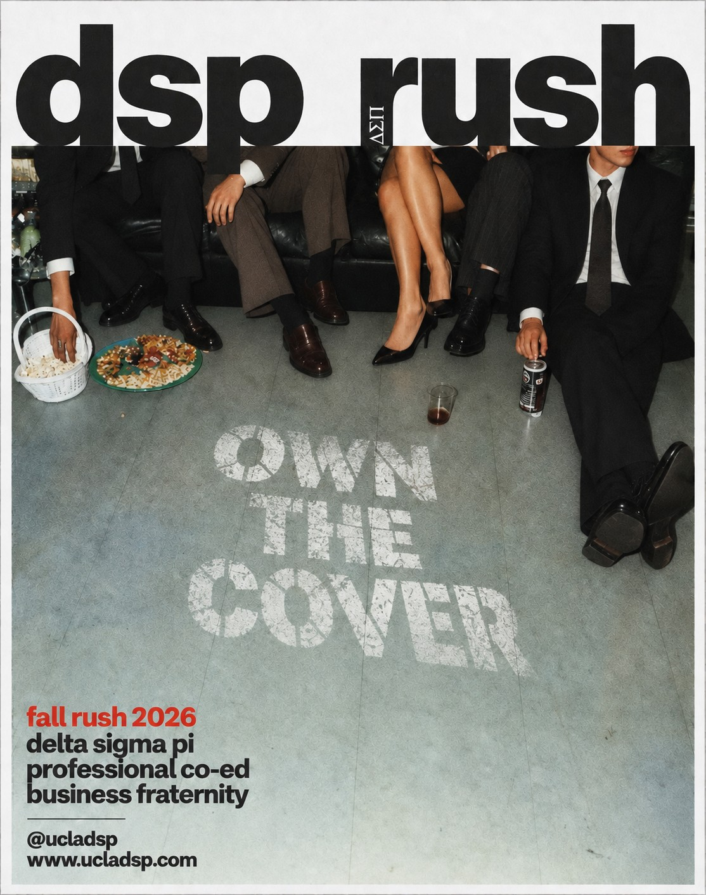
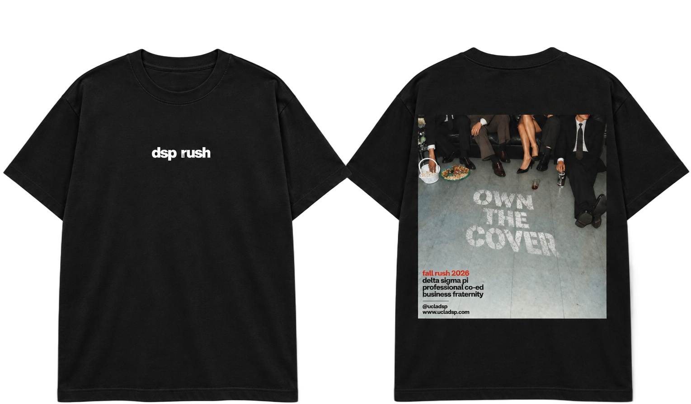
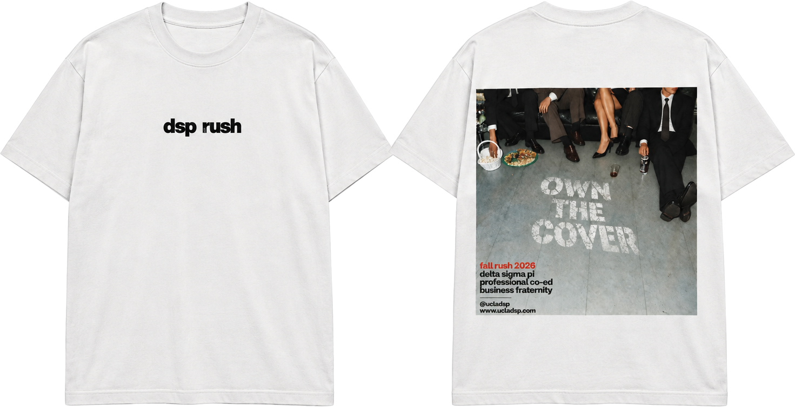
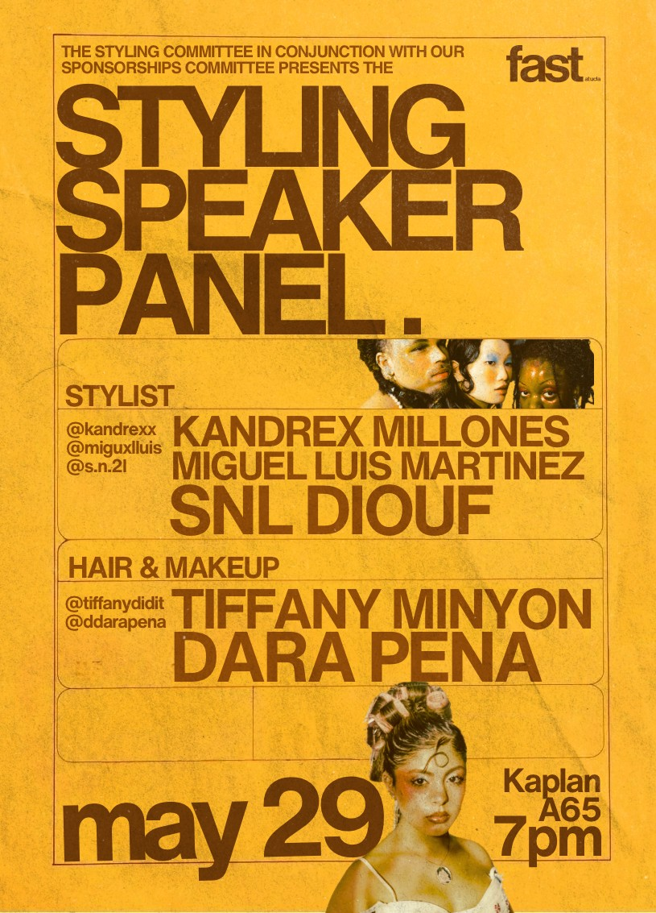
VI
Styling Speaker PanelFAST at UCLA
Event flyer for FAST’s styling committee: a speaker panel with three stylists and two hair and makeup artists.